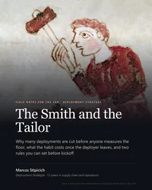
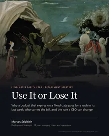
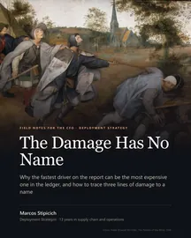
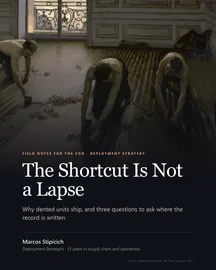
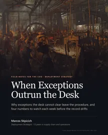
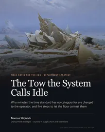
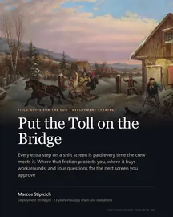

Marcos Stipicich
Deployment Strategist · Supply Chain & Operations, Santiago, Chile
I work at the boundary where operational software meets the physical floor and the income statement. Most enterprise rollouts and supply-chain tools fail in the gap between the database and the aisle: the record shows stock that is not on the rack, planners keep a parallel spreadsheet to survive the shift, and a rule written in one department quietly drains margin in another. My job is to find where the record and the floor diverge, fix the mechanism driving the loss, and stay until the new operation holds without workarounds.
Across thirteen years in Chile, Argentina and Australia, I have worked almost the entire operational chain from the inside: retail planning for more than 200 stores, a three-site logistics network of about 100 people on a USD 15M budget, a USD 30M cross-border e-commerce P&L where I freed about USD 5M in working capital, and the warehouse-system cutover of a 50,000-SKU distribution centre in Melbourne, where I stayed on the floor across shifts until the workarounds stopped and order processing time fell about 20%. In one of my consulting engagements, a floor walk traced mixed, short and damaged orders back to a per-operator productivity bonus; replacing that metric with customer satisfaction exposed why a supply chain cannot be fixed department by department.
I read an operation as a single coupled system where commercial promises, warehouse bins and working capital share the same state, and I scan rules, permissions and untrusted inputs adversarially before automating. To make that discipline repeatable, I build deterministic diagnostic and planning software: an inventory and replenishment engine with 10,756 passing tests in Python, receiving and field-audit kits, and a weightlifting planning application in TypeScript with about 1,332 unit tests and 31 integration tests on PostgreSQL. In the engine, every recommendation is staged in draft beside the operator’s own play and the status quo before anything touches a live record. I use AI as an execution lever: to draft specifications, accelerate implementation and run adversarial review agents against my own code. Floor discovery, causal judgment, the mathematical invariants and the rollback stay in my own hands.
I grew up on a sheep ranch in Patagonia, where my father’s rule was simple: reading is worth nothing if you cannot see it on a working day. I still work by it: I measure before I cut, and no model or slide deck outranks what happens on the floor at 02:30.
Available for pre-cutover forensic audits, cutover leadership, and Deployment Strategist or Forward Deployed Strategist roles.
If you are hiring
For technology vendors, enterprise rollouts, and Deployment Strategist or Forward Deployed Strategist roles:
Writing
For the CEO
-

Two rules you can set before kickoff.
-
How to measure the gap.
-

Who carries the bill, and the rule you can change.
For the CFO
-

How to trace the damage to a name.
-
How to test the control, not the signature.
For the COO
-

Three questions to ask where the record is written.
-

Four numbers to watch each week before the record drifts.
-

Five steps to let the floor contest them.
-

Four questions for the next screen you approve.
-
Four questions to ask of it.
Field bestiary
-
What a rule looks like when nobody has to carry it.
The Deployment Chasm, a manuscript